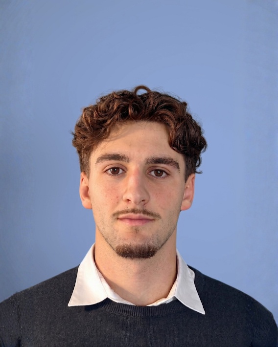

Esteban Deltrel
Étudiant ingénieur en 3EA (Électronique, Énergie Électrique, Automatique) – ENSEEIHT (Toulouse INP)
Passionné par les circuits intégrés et le développement de systèmes électroniques. Formation axée sur la maîtrise des composants intelligents et de l'ingénierie appliquée.
Parcours et projets d'ingénieur
Compétences
Logiciels & Langages
Ingénierie 3EA
Savoir-être
Projets académiques
Exploitation de l'énergie solaire
Projet en équipeRéalisation d'un projet d'étude en 2e année à la prépa T² sur l'exploitation de l'énergie solaire, alliant travaux pratiques à l'IUT Mesures Physiques et étude d'un cas concret : le projet Hyguane en Guyane.
Apports personnels & Rôle :
Suivi du calendrier et organisation du groupe : anticipation des livrables intermédiaires, fixation des échéances internes et répartition concertée des tâches selon les affinités de chacun.
Mobilité internationale
Langues
Expériences de voyage
Tchéquie – Prague
2024Voyage culturel, découverte du patrimoine historique et immersion dans l'environnement européen.
Écosse – Séjour linguistique
2023Séjour axé sur la pratique intensive de l'anglais et l'ouverture à une nouvelle culture.
Projet de mobilité future
Projet en cours de définition. L'objectif est de réaliser un séjour académique ou un stage à l'international afin de sortir de ma zone de confort, de développer mon adaptabilité interculturelle et d'explorer de nouvelles méthodologies de travail. Quelques pistes sont développées dans la partie développement de carrière.
Engagement citoyen & RSE
Mon engagement citoyen a débuté au lycée au sein de la Section Européenne axée sur le développement durable. Dans ce cadre, nous sommes intervenus auprès d'écoles primaires pour sensibiliser les jeunes enfants aux enjeux climatiques à travers des ateliers interactifs et des présentations pédagogiques. Cette expérience de transmission et d'impact concret m'a particulièrement marqué. Souhaitant poursuivre cette démarche au cours de mon cursus à l'ENSEEIHT, j'ai pour projet de m'investir dans une association étudiante afin de renouveler ce type d'actions d'ouverture sociale et de sensibilisation environnementale.
Sports et centres d'intérêt
Batterie
MusiquePratique de la batterie pendant plusieurs années. Développement de la rigueur, de l'écoute et du sens du rythme.
Football
Sport d'équipePratique du football en club. Esprit d'équipe, cohésion et régularité dans l'investissement.
Musculation
Entraînement personnelEntraînement régulier axé sur la discipline personnelle, la persévérance et le dépassement de soi.
Développement de carrière
Elevator Pitch
Présentation vidéo de 2 minutes résumant mon parcours, mes compétences et mes objectifs professionnels.
Modèles inspirants (Role Models)
Analyse de trois parcours d'ingénieurs aux profils variés pour explorer les différentes perspectives professionnelles du métier d'ingénieur et de la filière 3EA.
Sandrine Serres – Responsable Ingénierie (Airbus)
Parcours & École : Diplôme d'ingénieur généraliste / Aéronautique.
Évolution : Ingénieure d'études systèmes → Responsable d'équipe et suivi de projets chez Airbus.
Compétences clés : Gestion de projet, suivi technique, coordination d'équipe et organisation.
Ce que j'en retiens : Un profil d'encadrement mixte qui associe le management humain au pilotage technique. C'est la perspective qui m'attire le plus actuellement : coordonner des projets et mener une équipe tout en conservant une forte légitimité technique.
Frédéric Deltrel – Ingénieur Projets Industriels
Parcours & École : Formation d'ingénieur en Génie Électrique & Automatique.
Évolution : Ingénieur automatismes sur site → Chef de projet ingénierie industrielle.
Compétences clés : Suivi des installations, gestion des aléas terrain, électrotechnique et automatisme.
Ce que j'en retiens : Une illustration concrète de l'ingénierie opérationnelle. Ce parcours met en avant la réactivité et la maîtrise technique indispensables pour appréhender les enjeux complexes des sites industriels. C'est une facette du métier d'ingénieur qui demande une réelle capacité d'adaptation et de prise de décision face aux aléas du terrain.
Marc Laurain – Senior IC Design Engineer (STMicroelectronics)
Parcours & École : École d'ingénieurs spécialisée en Microélectronique.
Évolution : Ingénieur conception numérique junior → Architecte & Senior IC Design Engineer.
Compétences clés : Conception de puces, langages VHDL/Verilog, logique numérique et optimisation.
Ce que j'en retiens : Une orientation centrée sur l'expertise technique et l'innovation de pointe. Une expérience en stage me permettra d'évaluer concrètement si le métier d'ingénieur purement technique pourrait me plaire.
Projets de mobilité internationale potentiels
Sélection de trois pistes d'échanges universitaires internationaux en adéquation directe avec les domaines d'expertise de mes rôles modèles.
Échange universitaire – Ingénierie des systèmes complexes & Management
Piste d'échange pour approfondir mes compétences en ingénierie des systèmes complexes, notamment dans le domaine électronique, la gestion de projets industriels et les outils de décision. Mon objectif est d'acquérir une vision globale du pilotage de projets techniques, ce qui me sera particulièrement utile pour intégrer un grand pôle aéronautique européen. À travers cette mobilité, idéalement dans un pays comme l'Allemagne reconnu pour son expertise dans les systèmes complexes, je souhaite développer un profil polyvalent associant un bon niveau technique à des compétences en management, tout en perfectionnant mon anglais et mon allemand.
Échange universitaire – Automatique & Gestion de l'énergie
Piste d'échange pour renforcer mes bases en automatique, contrôle de procédés et optimisation des réseaux électriques. Je souhaite découvrir les méthodes permettant de gérer l'énergie et de piloter les infrastructures industrielles, un enjeu crucial dans l'industrie actuelle. Un pays comme la Suède ou la Norvège constituerait un choix très pertinent : ces nations font face à de fortes contraintes énergétiques et proposent des formations de premier plan dans ce domaine, tout en m'offrant une immersion culturelle et linguistique totalement dépaysante.
Échange universitaire – Microélectronique & Conception de circuits intégrés
Piste d'échange pour me spécialiser dans la conception de circuits intégrés (ASIC/SoC), la logique numérique et la microélectronique de pointe. Mon objectif est d'approfondir mes connaissances théoriques et pratiques afin de vérifier si l'ingénierie très technique me plaît réellement, n'y ayant jamais été confronté directement jusqu'ici. Une immersion à l'international est l'opportunité idéale pour tester cette voie au quotidien tout en découvrant une nouvelle culture.
Expériences passées
Présentation détaillée de mes premières immersions professionnelles en entreprise.
Stagiaire Ingénieur – Certification & Gestion des Occurrences
Airbus (Toulouse, France)
Immersion au cœur du pôle certification d'Airbus visant à appréhender le rôle de l'ingénieur dans le suivi de la navigabilité et la sécurité des avions en service.
Analyse & Gestion des Occurrences : Suivi et analyse des événements techniques imprévus (occurrences) présentant un risque potentiel. Participation à la recherche des causes et à l'élaboration de mesures correctives pour garantir la sûreté de la flotte.
Découverte du processus de certification : Assimilation des contraintes réglementaires et des critères stricts de navigabilité (normes EASA) régissant l'industrie aéronautique européenne.
Réseau & Immersion Métier : Entretiens et échanges réguliers avec de nombreux ingénieurs aux profils variés pour découvrir la diversité du métier d'ingénieur.
Employé Polyvalent de Grande Surface
Hyper U (Villefranche-de-Lauragais, France)
Expérience estivale en CDD au sein d'une grande surface commerciale requérant une forte réactivité et une excellente organisation quotidienne.
Gestion des Stocks & Logistique : Mise en rayon quotidienne des produits, gestion des stocks, contrôle des arrivages et optimisation de l'organisation en réserve.
Relation Client & Autonomie : Accueil, orientation et conseil de la clientèle sur le terrain. Travail dans un rythme soutenu exigeant autonomie et gestion des priorités.